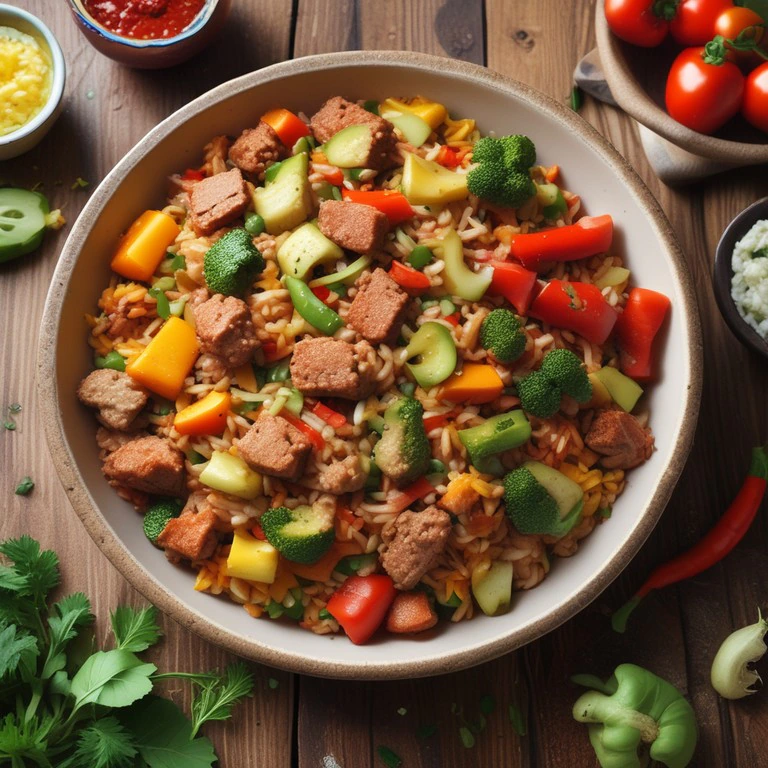

Carne Salteada con Verduras y Arroz

La carne salteada con verduras y arroz es una opción práctica para preparar un almuerzo completo sin complicarse demasiado en la cocina. La combinación de carne dorada, verduras crujientes y arroz es sencilla pero muy versátil, permitiendo adaptar los ingredientes según lo que tengas disponible.